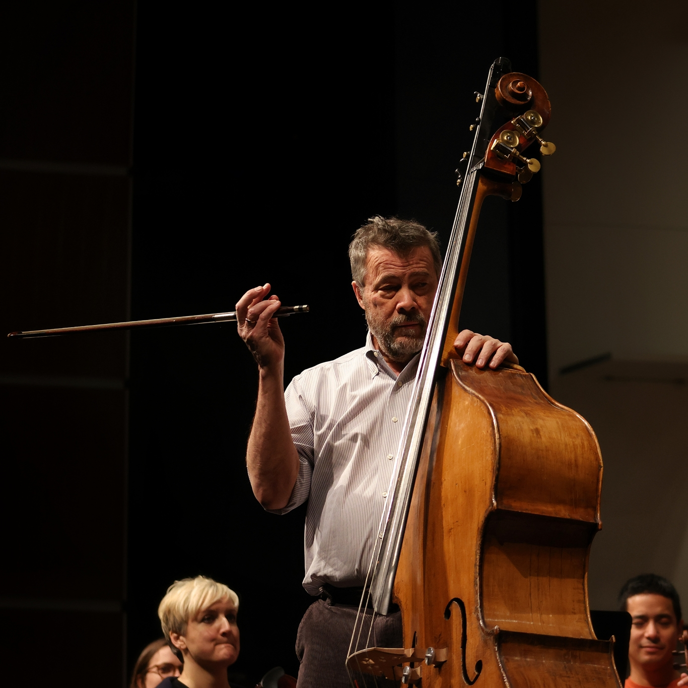
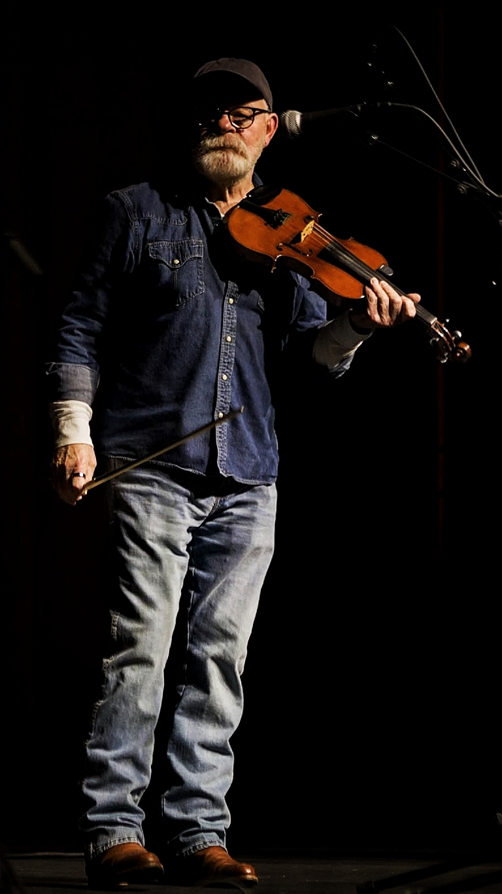
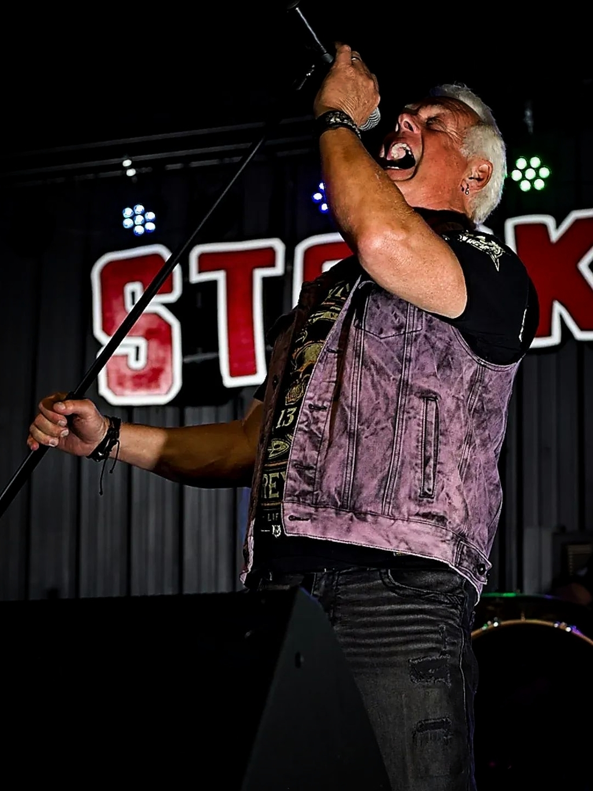
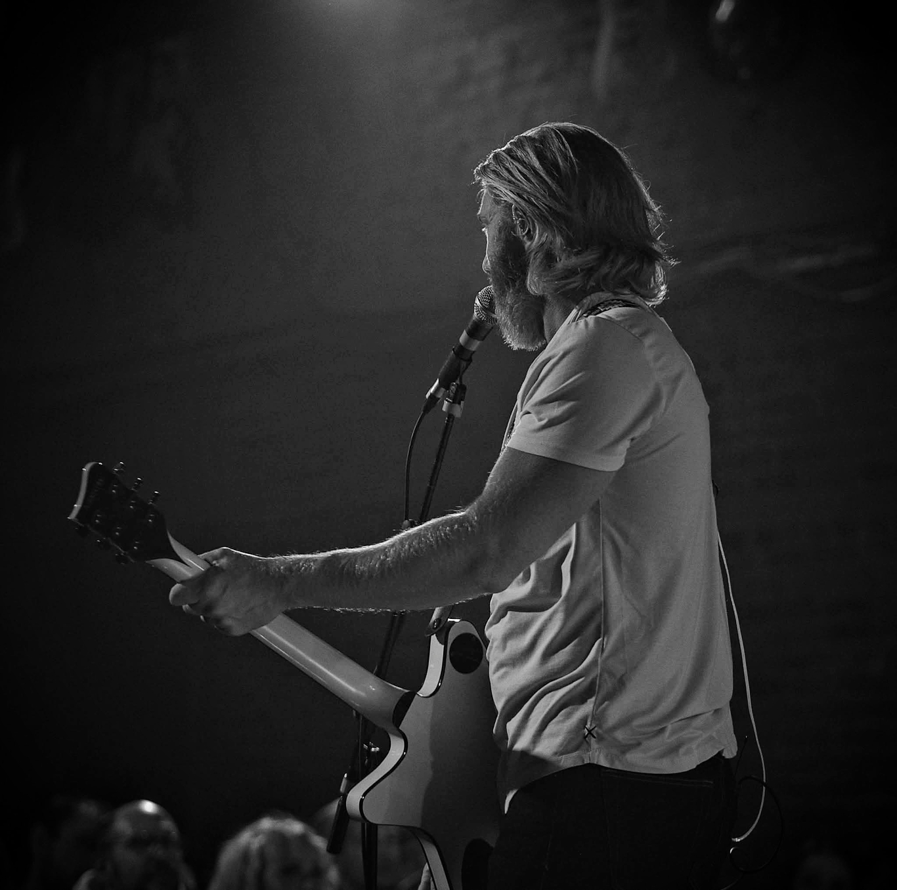
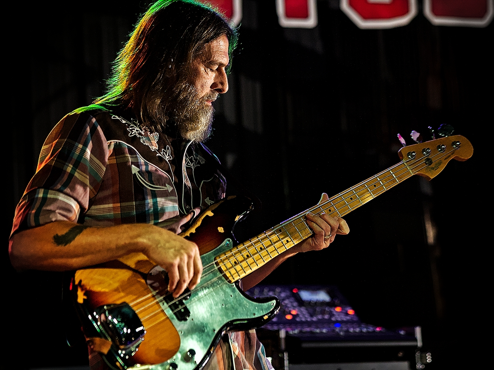
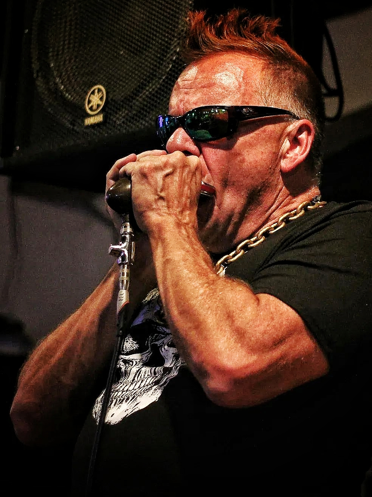
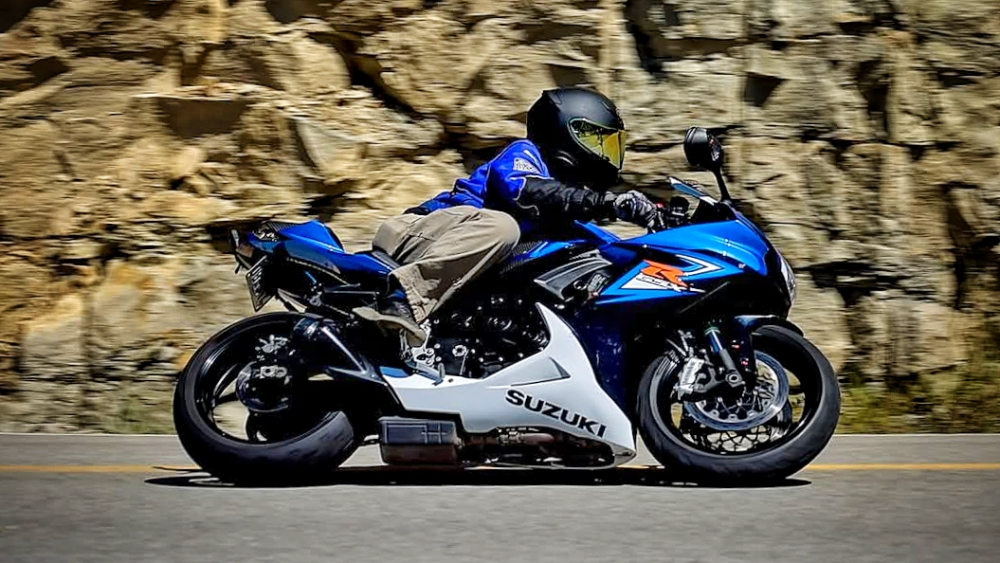

Photography & Videography
Visual stories for artists, events, and brands.
KM Media Ventures captures authentic moments with cinematic style—whether on stage, on set, or on location.

About KM Media Ventures
Story-driven visuals for artists, performers, and creatives.
KM Media Ventures specializes in capturing the energy, emotion, and atmosphere of live performances, intimate portraits, and unforgettable events.
From small venues to large stages, every project is approached with a focus on storytelling, mood, and authenticity.
- Live performance photography & videography
- Artist and band portraits
- Event coverage and promotional content
- While most of my work is rooted in the Johnson City / Kingsport / Bristol Tri‑Cities region, I’m also available for travel and out‑of‑state assignments.
- Pricing — every project is unique. Reach out to get a custom quote.
Photography Portfolio
Browse by category



















Videography Portfolio
Selected work from YouTube and other platforms
Landon Camper and the Pop-Up's
The Hired Guns Band
Elderbug
Symphony of the Mountains
Dirty Grass Soles
The Piedmont Boys
A Blue Shell Paradox
Kingsport Speedway
Kingsport Speedway # 8
Let's work together
Tell me about your project
Whether you're planning a performance, launching a new project, or need fresh visuals, I'd love to talk.
Currently booking 2026
I typically respond within 24–48 hours.